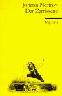

ISBN: 9783150036266
ListPrice: EUR 2,60
Maße: 0.35 x 5.83 x 3.78 in
Wertung: 4.5 (3 Stimmen)
Hinzugefügt am: 03.12.2008
Zusammenfassung: Trotz seines Vermögens fühlt sich Herr von Lips unzufrieden und glaubt am Leben vorbeizuleben. So fasst er den Beschluss etwas daran ändern zu müssen und zwar möglichst bald und schnell. Seine Idee: die nächste Frau die ihm über den Weg lauft will er heirate. Doch dieser Beschluss birgt ungeahnte Gefahren in sich, denn die Frau auf die er es abgesehen hat, Madame Schleyer, entpuppt sich als sehr betrügerisches Weib und als er deshalb mit dem Schlosser Gluthammer aneinander gerät werden beide nach einem Sturz über den Balkon für tot gehalten. Nun wird Lips Besitz auf seine 3 Erben verteilt, welche jedoch nicht so gute Freunde waren, wie sie Lips glauben machten. Unterdessen verstecken sich sowohl Gluthammer, wie auch Lips am Hof des Krautkopf, einem Pächter von Lips und Vetter von Kathy. Doch der totgeglaubte Lips lässt seine Erben nicht so ungeschoren davonkommen und manipuliert kurzerhand sein Testament, sodass Kathy zur Alleinerbin ernannt wird. Damit beginnt ein Buhlen um Kathys Gunst, dem sich auch Kathys eigener Vetter Krautkopf nicht verwehrt. Als Knecht verkleidet erfährt Lips nun auch die wahre Meinung seiner „Freunde“ über sich…
Mit einem Happy End, einigen unverhofften Wendungen, einem unterhaltsamen Verlauf, doch etwas zu flachen Charakteren thematisiert dieses Stück von Johann Nestroy davon wie man im Rausch des Geldes das Leben versäumen kann und wie sich das auf das Leben auswirkt.
Themen
Modern fiction, Deutsche Belletristik, Dramatik, Drehbuch, Österreichische Belletristik, TB/Belletristik/Dramatik, Belletristik, Dramatik, Essays, Lyrik